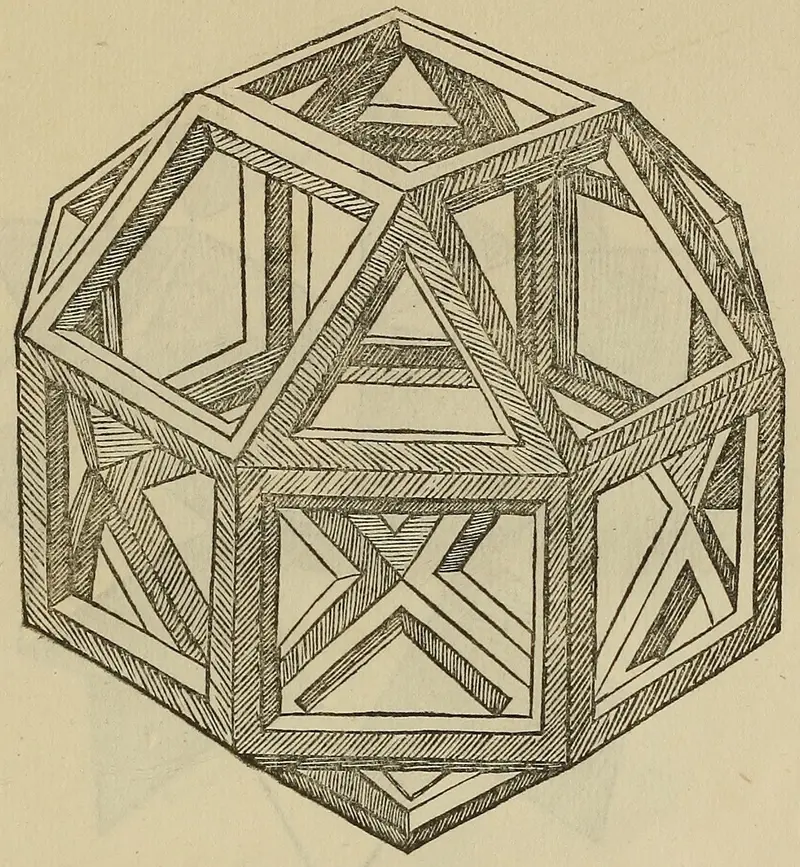
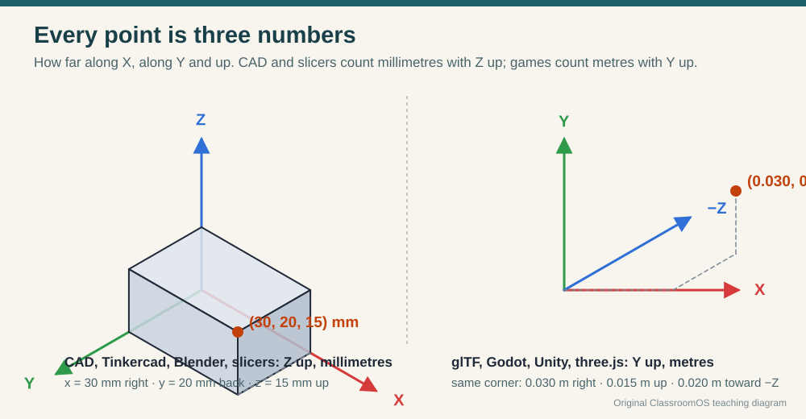
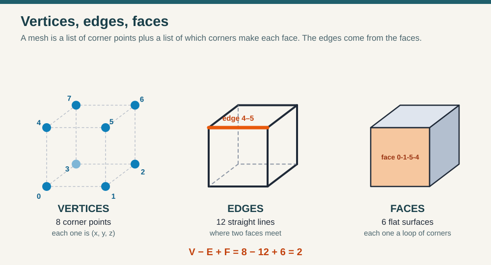
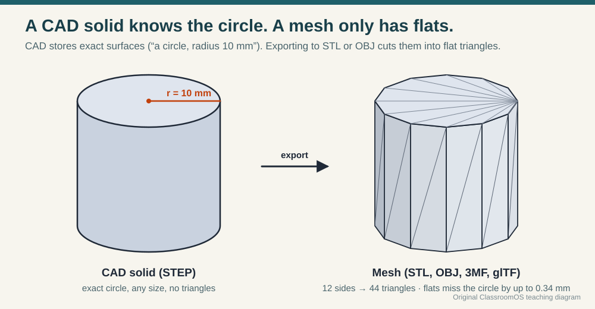
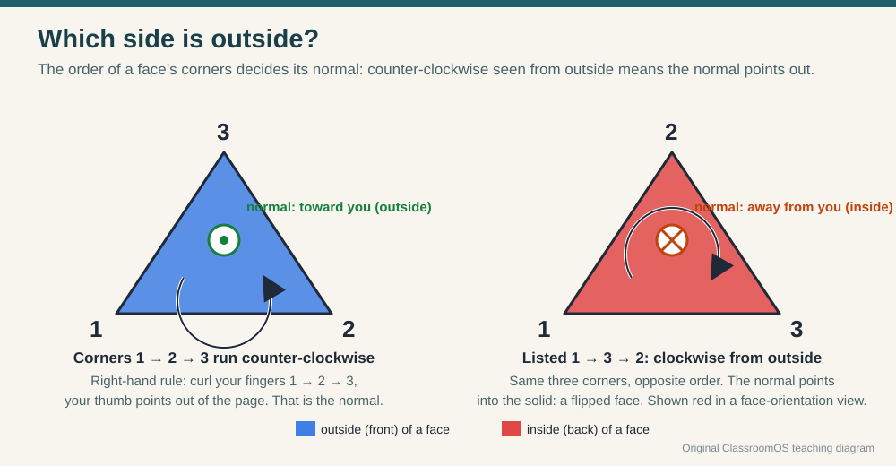
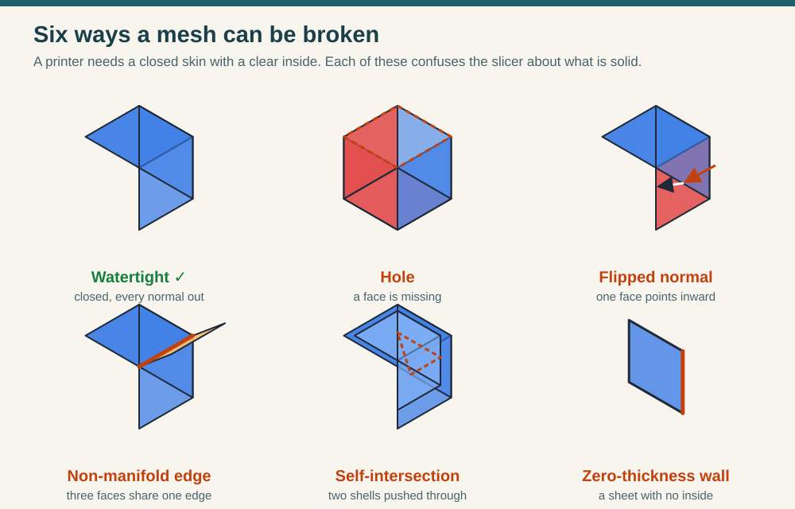
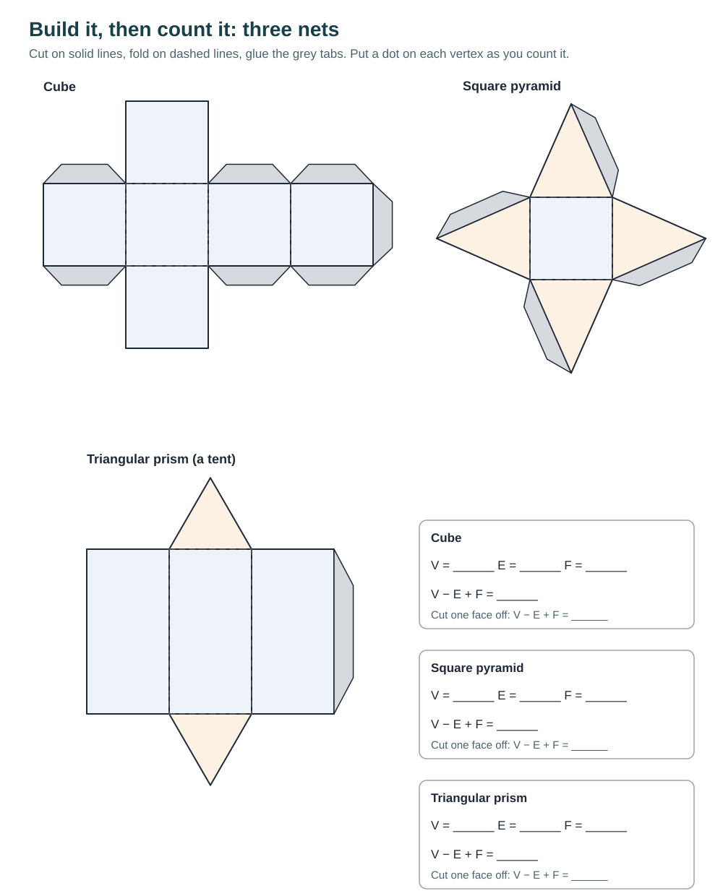

3D Design · Foundations · What is a 3D model?
A 3D Model Is a List of Points and a Promise About the Inside
On screen a model looks solid. Inside the file there is no plastic and no clay: only numbers. A list of corner points, a list of which corners make each flat face, and an agreement about which side of every face is "outside". In this lesson you take a model apart into those numbers, break meshes and repair them the way a slicer needs, then build real solids out of paper and count their corners to find a rule that is over 250 years old.
Start with a real object: a teapot
In 1975 a computer-graphics researcher at the University of Utah, Martin Newell, wanted a real object to test his drawings on. He picked up his family's white Melitta teapot, sketched it on graph paper, and typed the coordinates of its outline into a computer. The "Utah teapot" became one of the most-drawn objects in computer graphics, and the real pot now sits in the Computer History Museum in California.
That is what every 3D model still is: someone measured a shape and wrote it down as coordinates. Even the idea of showing a solid by its edges alone is old. Five hundred years before computers, Leonardo da Vinci drew polyhedra as open frames so you could see every edge at once, the way a 3D app's wireframe view does. (To learn how to code your own wireframe and perspective projection engine from first principles, see 3D from Scratch: Projection & Render Engines.)



1 · Every point is three numbers
Pick any corner of your desk. To tell someone exactly where it is, you need three distances from a starting corner: how far right, how far back, how far up. Those three numbers, written (x, y, z), are the point's coordinates. The starting corner is the origin, (0, 0, 0), and the three directions are the axes. Every 3D app colours them the same way: X red, Y green, Z blue.

Where to find units and the up axis in the app you use (the column you pick is remembered across the site):
2 · Vertices, edges and faces
A mesh is the most common kind of 3D model. It has three parts:
0 → 1 → 5 → 4. A face with three corners is a triangle; with more than four it is an n-gon.
A mesh has no curves
Every face is flat, so a mesh can only fake a curve with many small flat facets. A CAD program keeps the true circle ("radius 10 mm") until you export. Then it is cut into triangles, which is called triangulation, or tessellation.

This is the "resolution" or "segments" setting in an exporter or a CAD app. More sides means smoother prints and bigger files. Past the point where the error is smaller than a printed layer, extra sides buy nothing you can see.
3 · Which side is outside? Normals
A face is a flat sheet with two sides, and the computer has to know which side faces the air. That direction is the face normal: an arrow sticking straight out of the face. The file doesn't store an "outside" label. It stores the order of the corners. Listed counter-clockwise as you look at the face from outside, the normal points at you. This is called the winding order.

Try it with your hand: hold a sticky note flat on your desk and number its corners 1, 2, 3 counter-clockwise as you look down at it. Curl your right-hand fingers 1 → 2 → 3. Your thumb points up, out of the desk. Now number them clockwise. Your thumb points down into the desk. A slicer reading a flipped face thinks the air is inside the part.
4 · Watertight: the promise a printer needs
A slicer has to decide, layer by layer, which spots are plastic and which are air. It can only do that if the mesh is a closed skin with a clear inside, like a balloon with no holes. Such a mesh is called watertight, or a manifold mesh. The test is simple enough to do by hand:
- Every edge is shared by exactly two faces. One face means a hole or a crack (an open edge). Three or more means something extra is stuck on (a non-manifold edge).
- Every normal points out. Neighbouring faces must walk their shared edge in opposite directions.
- Corners that touch are one corner. Two separate vertices sitting a hair apart leave a crack you can't see, called a gap.

Most slicers and 3D apps can show these problems. Look for a face orientation view (flipped faces turn red), a "non-manifold" or "3D print" check, or a "repair model" button. Know what they fix, because an automatic repair can guess wrong.
Mesh Inspector
Inspect mode: load a shape, click a vertex, edge or face, and read its numbers. Turn on Normals and Inside / outside to see which way every face points. Predict V, E and F before you press Reveal counts.
Repair mode is the fix-the-broken-mesh challenge: each puzzle number is a mesh with hidden faults. Find them, repair them with the same four moves real repair tools make, and press Check watertight. Fewer moves is better. Give your neighbour your puzzle number and race.
Drag to turn · scroll to zoom · click to pick · grid squares are 10 mm
Selection
Counts
- outside of a face
- inside of a face
- open edge
- non-manifold edge
- flipped face
- gap (corners almost touching)
- selected
Where the same tools live in a full 3D app:
5 · File formats: what each one remembers
The same shape can be saved in many file types. They differ in what they remember about it. Pick the format by asking where the file is going next.
| Format | Stores the shape as | Units | Colour, textures | Use it for |
|---|---|---|---|---|
| STL 3D Systems, documented 1988 | A plain list of triangles, each with its three corners and a normal. Corners are repeated, not shared. | None (slicers assume mm) | No | Sending a single-colour part to almost any slicer. |
| OBJ Wavefront Technologies, about 1990 | Text lines: v for vertices, f for faces that point to vertex numbers; optional normals and texture coordinates. | None | Through a separate .mtl file | Moving a textured model between modelling apps. |
| GLB / glTF Khronos Group, version 2.0 in 2017 | Triangle meshes plus materials, textures, a scene tree and animation. GLB packs it all into one file. | Metres, Y up | Yes | Games, the web, VR, AR; anything that is looked at rather than printed. |
| 3MF 3MF Consortium, 2015 | Shared vertices and triangles in a zipped package, several objects per file, plus print information. | Yes (mm by default) | Yes | 3D printing when you want units, colours and several parts kept together. |
| STEP ISO 10303, first published 1994 | Exact surfaces and edges (a true cylinder, a true fillet), not triangles. | Yes | Basic colours | Sending a part to another CAD program, or to an engineer who will change it. |
A good habit: keep the editable original (your CAD file or STEP) and export a mesh only to print or to show. A mesh is like a photocopy: easy to use, hard to edit, and every round trip loses something.
How to export and import in the app you use:
In this site's tools: Workbench exports STL, animated GLB and OBJ, and checks the print before it lets you export. Forge builds closed, print-checked parts from numbers.
6 · Build it, then count it: V − E + F
Leonardo's frame, the cube, the house in the inspector: count their vertices, edges and faces and something strange happens every time. Leonhard Euler noticed it and wrote it to his friend Christian Goldbach in 1750: for any solid without a hole through it, V − E + F = 2. Now test it on solids you build with your hands.
Materials
The printable nets below (card stock, scissors, glue stick), or straws or toothpicks joined with modelling clay, mini marshmallows or pipe cleaners. A marker for dotting corners as you count.

Steps
- Build three solids: a net, or a straw frame (straws are edges, clay balls are vertices).
- Count V by putting a dot on each corner as you go, so you never count one twice.
- Count E by running a finger along each edge and ticking it. On a straw frame, count the straws.
- Count F by numbering each face with a marker.
- Predict, then compute V − E + F and write it in the sheet. Is it 2?
- Break the rule on purpose: build a picture frame (a square ring with a hole through it) from straws or card. Count again. What do you get now?
| Solid | My prediction | V | E | F | V − E + F |
|---|---|---|---|---|---|
| Cube | |||||
| Square pyramid | |||||
| Triangular prism | |||||
| Tetrahedron (4 triangles) | |||||
| My own solid: | |||||
| Picture frame (has a hole) |
Check your counts against the Mesh Inspector: its cube, pyramid, house and picture frame use the same shapes. The frame should give 0, not 2. Every tunnel through a solid lowers V − E + F by 2. That is why mathematicians use the number to count holes, and why a 3D app's mesh statistics can hint that a model has a hole you didn't mean to make.
Use Save answers in the lesson's heart | save | print pill to keep this sheet in your browser, or print the lesson as a handout.
Pick your level
K–2 · Corners and sides
Build a cube from clay balls and straws. Count the corners (clay balls) and the sticks together. Find a face on the inspector's cube and say which way its arrow points: out to the air.
3–5 · Count and check
Fold two nets and fill in their rows. Predict V, E and F for a shape in the inspector before pressing Reveal. Solve Repair puzzle 1 at Level 1.
6–8 · Repair and explain
Fill the whole record sheet including the picture frame. Solve two Level 2 puzzles and explain each fault in the words open edge, flipped and gap. Read one vertex's coordinates in both mm and metres.
9–12 · Prove and choose
Solve a Level 3 puzzle in the fewest moves and justify the order. Explain why a tunnel lowers V − E + F by 2. Choose a format for each Trio print and for a game version of it, and defend the choice.
Checkpoint
You're ready to move on when you can:
- Read a vertex's coordinates and say which number is "up" in a CAD file and in a game file.
- Point to a vertex, an edge and a face on a real object and on a mesh.
- Explain how the order of a face's corners decides its normal.
- State the three watertight checks and repair a broken mesh in the inspector.
- Choose STL, 3MF, GLB, OBJ or STEP for a job and say what the file will forget.
- Show V − E + F = 2 on a solid you built, and explain why a ring gives 0.
Next: measure a real object and design parts that fit it in Measure and Fit, then prepare a print. Rebuild a shape by its three views in CAD camera controls. Scans arrive broken: repair them in Scan a Likeness.
Practice Problems
Easy1. A triangular prism (a tent shape) has how many vertices?
Easy2. A cube is saved as an STL file, which stores only triangles. How many triangles is it?
Easy3. In a mesh that a slicer can print, every edge is shared by how many faces?
Medium4. The inspector's house has 10 vertices and 7 faces. Use Euler's formula: how many edges?
Medium5. Leonardo's rhombicuboctahedron has 8 triangle faces and 18 square faces. Each edge is shared by two faces. How many edges does it have?
Medium6. A CAD corner is at (40, 25, 10) mm with Z up. In a glTF file (metres, Y up), what is its y value?
Challenge7. A binary STL file has an 84-byte header and count, then 50 bytes per triangle. How many bytes is the 12-triangle cube?
Challenge8. A 20 mm-wide cylinder (radius 10 mm) is exported with 32 flat sides. The biggest gap between a flat side and the true circle is r × (1 − cos(180° ÷ n)). How big is it, in mm (three decimal places)?
Challenge9. The inspector says a repaired cube holds 8.00 cm³. PLA weighs about 1.24 g per cm³. About how many grams is it, printed solid?
Vocabulary
- Coordinates
- Three numbers (x, y, z) that say where a point is, measured from the origin along the three axes.
- Up axis
- The axis that points up: Z in CAD and slicers, Y in glTF and most game engines.
- Mesh
- A 3D model made of vertices joined into flat faces.
- Vertex
- A corner point of a mesh. Plural: vertices.
- Edge
- A straight line between two vertices where faces meet.
- Face
- A flat surface of a mesh, stored as a loop of vertex numbers.
- Facet
- One of the flat faces a mesh uses to imitate a curved surface.
- Triangulation
- Cutting faces or curved surfaces into triangles, as STL export does.
- Face normal
- The direction a face points outward, set by the order of its corners.
- Winding order
- The order a face's corners are listed in; counter-clockwise from outside means the normal points out.
- Watertight (manifold) mesh
- A closed mesh with every edge shared by exactly two faces and every normal pointing out.
- Non-manifold edge
- An edge shared by three or more faces.
- Euler's polyhedron formula
- V − E + F = 2 for any solid without a hole through it.
- STL · OBJ · glTF/GLB · 3MF · STEP
- 3D file formats. The first four store meshes; STEP stores exact CAD surfaces.
Sources
- Library of Congress, Sustainability of Digital Formats: STL (STereoLithography) File Format Family (documented by 3D Systems in 1988; triangle surface, single colour), Wavefront OBJ File Format (Wavefront Technologies, about 1990; materials in an MTL file), 3D Manufacturing Format (3MF) (3MF Consortium, 2015; units, colour, multiple objects), and STEP-file, ISO 10303-21 (first edition 1994).
- The Khronos Group, glTF 2.0 Specification, section 3.4 "Coordinate System and Units" (+Y up; linear distances in metres).
- D. S. Richeson, Euler's Gem: The Polyhedron Formula and the Birth of Topology, Princeton University Press, 2008 (Euler's 1750 letter to Goldbach; holes and V − E + F).
- L. Pacioli, De divina proportione, Venice, 1509, with illustrations after Leonardo da Vinci: Internet Archive scan.
- Utah teapot (Martin Newell, University of Utah, 1975; the original pot at the Computer History Museum), and the photo's Wikimedia Commons page.
- PLA density of about 1.24 g/cm³: typical filament datasheet value; check the one for your spool.